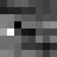
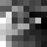
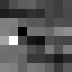
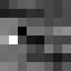
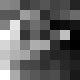
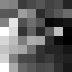

also look at `README.md` on codebase for more images and in other output directories for all the images and videos
for `PART 1` ...
you can call `a1.py` or `a1.py -add` to add more points
then `a2.py`
then `a3.py`
then `a5.py` it want the images cleaned and blended better
also can call `a4.py` to rectify the image
For this project, I took multiple sets of pictures, but I ended up liking a set of online images better. I took my own images for practice but used the following for the mosaicing part. The images had overlapping fields of view, which made it easier to work with homographies and mosaic blending.
For the sets I worked with:
Here are the personal image sets that I took:
Homography recovery was a critical part of aligning images. I manually selected corresponding points between image pairs, which were saved under the `code/points/` directory. The homographies were computed using a custom `computeH` function, which takes in these points and computes the homography matrix using a least-squares solution. Each transformation matrix was stored under `code/h_matrix/`.
Example of points visualization:
Homographies for different image sets:
code/h_matrix/1me/H_IMG_6786_to_IMG_6783.txt
code/h_matrix/1me/H_IMG_6792_to_IMG_6783.txt
code/h_matrix/9/H_002_to_001.txt
code/h_matrix/9_5/H_002_to_001.txt
code/h_matrix/11/H_003_to_001.txt
Once the homographies were recovered, I used them to warp the images. The warping was done using inverse mapping, which maps each pixel from the output back to the input image. This step also involved bilinear interpolation to resample the pixel values from non-integer coordinates. The warped images were saved under the `code/output/` folder for each set of images.
For testing the homography accuracy, I performed image rectification. This involves transforming an image such that a known planar object (like a square or rectangular tile) appears fronto-parallel. I manually selected the corner points of rectangular objects and computed the homography to map these points to a perfect rectangle. The results were stored under the `code/rectify/` folder.
In the final step, I blended the images into a mosaic. To achieve seamless transitions between images, I computed alpha masks for each image, giving more weight to the center and tapering off towards the edges. This was crucial for smooth blending, especially in overlapping regions.
I implemented both basic weighted averaging and Laplacian pyramid blending for smoother transitions. The results were saved in the `code/output/` folder for each image set.
------------------------
for `PART 2` ...
`b1.py` is linked with `step1` folder
`b2.py` is linked with `step2` folder
`b3.py` is linked with `step3` folder
`b4.py` is linked with `step4` folder
`b5_1.py` is linked with `step5` folder
then use can use part 1 stuff to link all images with the auto created points
this process now can skip calling `a1.py` and just call `a2.py` then `a3.py` or `a5.py` or both
I also have 3 bash files titled `runall.sh`, `runall_shark.sh`, and `runall_shark_p.sh` so you can get a fell for how the pipeline works
main one is: `runall.sh`, which allows you to just put in images and then get the output for that group
------------------------
in the next few sections I will walk through a sample image for each part of the project and then at the end include my final images so it does not get to cluttered
specifically, I will walk through image set `9_0_P2`
IMPORTANT: please also right-click and open image in new tab if too small to see as all images are high resolution and pdf of website is low resolution to fit on gradescope submission
so we first start with the following two images + converted to black and white so that we have a single channel ...
This is the part for detecting corner features in an image (10 pts)
First use `b1.py` to reading and prepare images for processing for all the other files then
this section corresponds to `b2.py` where I follow the paper shared which wanted ...
Harris Interest Point Detector (Section 2 of the paper)
in my code `b1.py` gives step1, all the harris corners images which for this look like:
then from here step 2 from `b2.py` gives all the anms corner images which look like:
also all of the metadata for each section is saved in its appropiate section
This section is for ... Extracting a Feature Descriptor for each feature point (10 pts)
the guidelines for this that I followed also stem from the paper in which there are the following condition ...
Implement Feature Descriptor extraction (Section 4 of the paper).
Extract axis-aligned 8x8 patches from a larger 40x40 window.
Bias/gain-normalize the descriptors.
Ignore rotation invariance and wavelet transform.
this section corresponds to `b3.py` and for reference here are what some of the feature descriptors for each point look like:


This section is for ... Matching these feature descriptors between two images (20 pts)
the code for this is in `b4.py`
in the paper this corresponds Implement Feature Matching (Section 5 of the paper).
here we use Lowe's ratio test for thresholding based on the ratio between the first and second nearest neighbors.
please consult Figure 6b in the paper for picking the threshold.
and what `b4.py` specifically does is perform feature matching between pairs of images by ...
Loads descriptors from `b3.py` for each image.
Computes distances between descriptors from different images.
Applies Lowe's ratio test to retain good matches.
And it returns matched keypoint indices between image pairs which you can see for the image below
This section is for ... Use a robust method (RANSAC) to compute a homography (30 pts)
the code for this is in `b5_1.py`
`b5.py` uses the 4-point RANSAC as described in class to compute a robust homography estimate
so that we can handle outliers effectively
the process is as follows ...
Loads matched keypoint indices from `b4.py`
Loads keypoint coordinates from `b2.py`
then do RANSAC Homography Estimation which includes ...
Randomly sample subsets of matches to compute candidate homographies
Computes the homography using the Direct Linear Transformation (DLT) method
Identifies inliers based on reprojection error and a specified threshold
Repeats for a number of iterations to find the best homography
then from here all the info and points are stored so they can then be used to produce the mosaic
this is the result from step5 data inliers ...
and as you can see it cleans up a lot of the issues as I also set it to prioritize accuracy over point totals
below I have more details plus extra images beyond the 3 but here are the three so you can see them quickly and not miss them ...
manual on left, auto on right
please continue reading below if more info is needed ...
This section is for ... Proceed as in the first part to produce a mosaic (30 pts; you may use the same images from part A, but show both manually and automatically stitched results side by side) [produce at least three mosaics]
the code for this is reuse of part1 as I saved the auto generated points in `./points` directory and then call `a2.py` and `a3.py` and `a5.py`
which then gives ...
this can be compared to the manual selected points one which gave ...
as you can see because I selected a lot of points for this one and am blending and sharpening very strongly both look good but they are some where one might look worse then another
when comparing handpicked `\9` which looks like
to autopicked `9_1_P2` with to strict parameters and thus too little points we can see that the auto picked one is slightly blurrier then handpicked
it looks like ...
another image I worked on was in which the auto generated point looked better was when comparing handpicked `\10` with auto generated `10_0_P2`
handpicked `\10` looks like ...
and auto generated `10_0_P2` looks like ...
here you can see that the grass looks a lot better and if you zoom in most if not all the images looks sharper
this can be further seen when comparing the points I selected for the two and how accurately I tried to select the points here they are for context
`\9` and `\9_1_P2`
here is was not able to find as many connection as there was not as much overlap so it was less certain ...
`\10` and `10_0_P2`
here there was a ton of overlap plus I also was lazy when selecting points ...
some other combos I made with the auto one are ones that would have taken too long to do by hand, like ...
manual on left, auto on right
`\11_2_P2`
`\12`
`\frame_0001`
combined 4 seperate 4k shots of geese from different overlapping camera angles and locked the orientation of the top left frames and warped everything around that
i.e. locked the orientation of quadrant 2
video frames are in 2 by 2 grid and combined them with quadrant 2 then 3 then 4 then 1 based on diagram above and then flattened and got ...
for context the 4 images for a single frame are in format ...
The coolest thing I have learned from this project is the incredible power of computer vision techniques to automate complex tasks like image stitching. By delving deep into feature detection, description, matching, and robust homography estimation with RANSAC, I was able to create a system that seamlessly stitches images without any manual intervention. It was really cool to see how the mathematical algorithms come together to solve real-world problems. Moreover, implementing research papers and translating theoretical ideas into practical code has significantly enhanced my understanding and appreciation of the topic.


 

 
